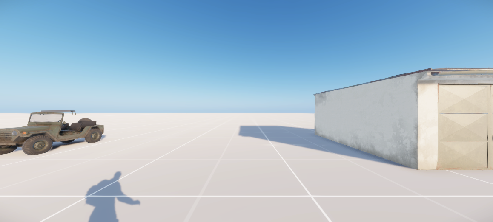
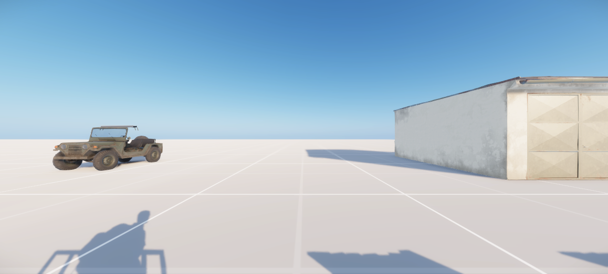
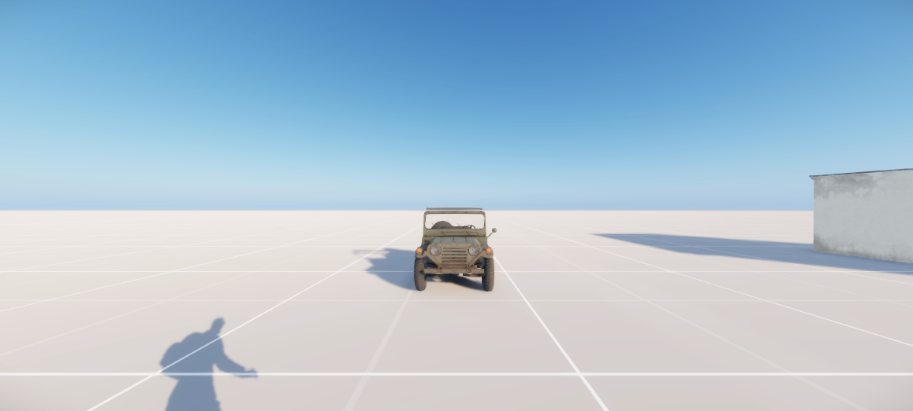

Roadmap_Garage
Roadmap.layer at 186 0 102.1
Look: EL_ConfiscateAction,EL_VehicleStoreAction@Roadmap_Garage,EL_VehicleRetrieveAction@Roadmap_Garage
18.942 m from the nearest other site. Mesh: ok.
Pass.
2 passed, 0 failed, 2 sites.
Play-mode street pass. Pictures sit beside the look text. The test server stays down.


Roadmap.layer at 186 0 102.1
Look: EL_ConfiscateAction,EL_VehicleStoreAction@Roadmap_Garage,EL_VehicleRetrieveAction@Roadmap_Garage
18.942 m from the nearest other site. Mesh: ok.
Pass.

Roadmap.layer at 204 0 108
Look: EL_ConfiscateAction,SCR_GetInUserAction@Roadmap_Escort_Car,SCR_GetInUserAction@Roadmap_Escort_Car,SCR_RefuelAtSupportStationAction@Roadmap_Escort_Car,SCR_PushVehicleAction@Roadmap_Escort_Car,SCR_ToggleHandbrakeAction@Roadmap_Escort_Car,SCR_ResourceContainerVehicleLoadAction@Roadmap_Escort_Car,SCR_ResourceContainerVehicleUnloadAction@Roadmap_Escort_Car,SCR_OpenVehicleStorageAction@Roadmap_Escort_Car,EL_VehicleLockAction@Roadmap_Escort_Car,LF_JailPutInVehicleAction@Roadmap_Escort_Car,SCR_GetInUserAction@Roadmap_Escort_Car
18.942 m from the nearest other site. Mesh: ok.
Pass.